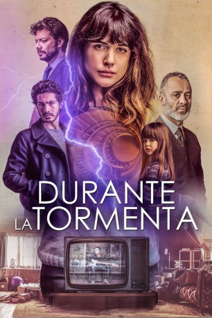

#10902 Parallelwelten
 
 IMDB-Wertung: 7.5 / 10
IMDB-Wertung: 7.5 / 10  Metascore: 0
Metascore: 0 
Krankenschwester Vera zieht mit ihrem Ehemann und ihrer Tochter in ein neues Zuhause. Sie hätte eine vielversprechende Karriere als Nervenchirurgin vor sich gehabt, entschied sich aber für ihre Familie. Als ein schwerer Sturm über Spanien fegt, findet die neue Bewohnerin des Hauses einen Fernseher in einem Schrank, der eine mysteriöse Botschaft enthält. Ein kleiner Junge namens Nico spricht aus der Vergangenheit zu Vera. Vor 25 Jahren wohnte er selbst in dem Gebäude. Doch dann wurde er Zeuge eines Mordes und auf der Flucht von einem Lastwagen überfahren. Vera findet einen Weg, in der Zeit zurückzureisen, um Nico vor dem Tod zu bewahren. Doch die Rettung bringt ungewollte Folgen mit sich. Zurück in ihrer Zeit hat Vera ihren Mann nie kennengelernt, geschweige denn eine Tochter mit ihm gezeugt. Dafür ist sie jetzt eine erfolgreiche Chirurgin. Vera versucht alles, ihr altes Leben zurückzubekommen. Dafür hat sie aber nur 72 Stunden Zeit…
Jahr: 2018
Dauer: 129 Minuten
FSK:
Land: Spanien Studio: Warner Bros. PicturesTonspuren: DD5.1 - ,
Untertitel: Deutsch, Englisch,
Auflösung: 1080p (1920x1080) Größe: 2590 MB
Genre: Thriller, Drama, Liebe
Regisseur: Oriol Paulo
Drehbuch: Oriol Paulo, Lara Sendim
Soundtrack: Fernando Velázquez
Darsteller:
 Adriana Ugarte als Vera Roy
Adriana Ugarte als Vera Roy- Chino Darín als Inspector Leyra
 Javier Gutiérrez als Ángel Prieto
Javier Gutiérrez als Ángel Prieto- Álvaro Morte als David Ortiz
- Nora Navas als Clara Medina
- Miquel Fernández als Aitor Medina
 Clara Segura als Hilda Weiss
Clara Segura als Hilda Weiss- Aina Clotet als Úrsula
- Albert Pérez als Román
- Julio Bohigas-Couto als Nico Lasarte (12 años)
 Francesc Orella als Doctor Fell
Francesc Orella als Doctor Fell Ana Wagener als Inspectora Dimas
Ana Wagener als Inspectora Dimas- Silvia Alonso als Mónica
 Belén Rueda als Dra. Sardón
Belén Rueda als Dra. Sardón- Luna Fulgencio als Gloria Ortiz
- Vicente Ayala als Gus
- Aleida Torrent als Raquel Enfermera
- Mima Riera als María Lasarte
- Marco de Francisco als Aitor Medina (12 años)
- Ruth Llopis als Profesora Miranda
- Joel Illescas als Nico Lasarte (15-19 años)
- Alex Cortés als Conductor Accidente
- Xavier Ruano als Jefe Mudanzas
- Marta Falcón als Lidia Recepcionista
- Sigrid Cañas als Greta
- Antonio Cifo als Paciente (Sr. Mendoza)
- Mónica Lleó als Doctora Quirófano
- Toni Báez als Doctor Quirófano
- Maykol Hernández als Agente 1 Policía Colegio
- José Umpiérrez als Agente 2 Policía Colegio
- Borja Texeira als Agente Judicial 1
- José Manuel Trujillo als Agente Judicial 2
- Jorge Llamas als Empleado Matadero
- Pep Papell als Agente Comisaría Nico 1989
- Marta Vives als Presentadora La 5ª Esfera
- Inés Torres als Niña del abrigo rojo
Datei: X:\2018(N-Z)\Parallelwelten (2018, FSK, 1920x1080).mkv seit 03.04.2019
Festplatte: HD 2018(G-Z)-2019(A-Z)
 Es gibt insgesamt 172 Filme in der Gruppe '2018(N-Z)'
Es gibt insgesamt 172 Filme in der Gruppe '2018(N-Z)'